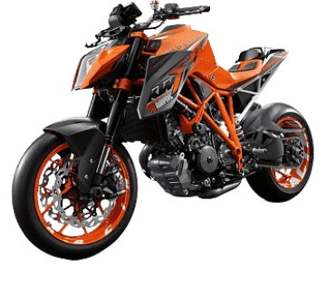

DISEÑADA PARA LA ADRENALINA
Experimenta la máxima expresión de la ingeniería: más de 200 HP de pura emoción, manejo preciso y un sonido que vibra en tu alma.

POTENCIA MÁXIMA
Motor bicilíndrico en V de 1301 cc que ofrece una entrega de potencia brutal con una respuesta inmediata y control total.
TORQUE MÁXIMO
Torque impresionante disponible a bajas y medias revoluciones, ideal para aceleraciones contundentes y conducción deportiva.
VELOCIDAD MÁXIMA
Velocidad máxima aproximada, limitada electrónicamente, con un chasis y aerodinámica diseñados para máxima estabilidad.